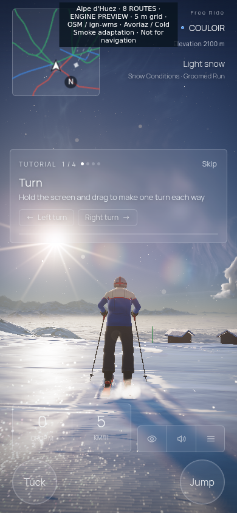
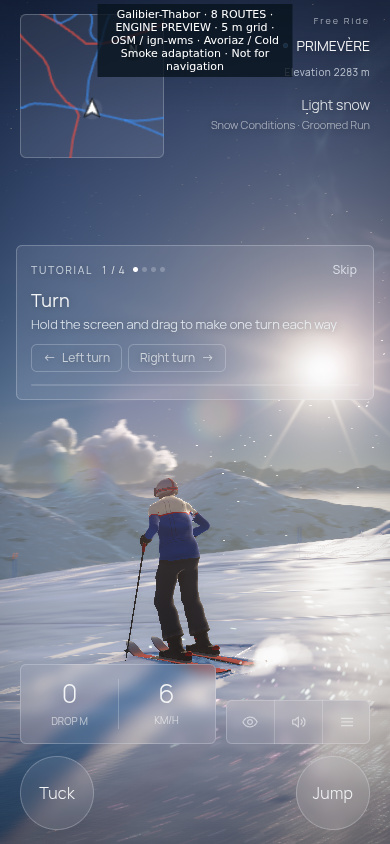
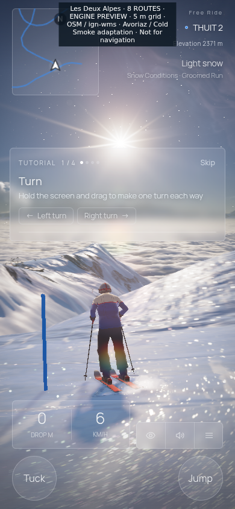
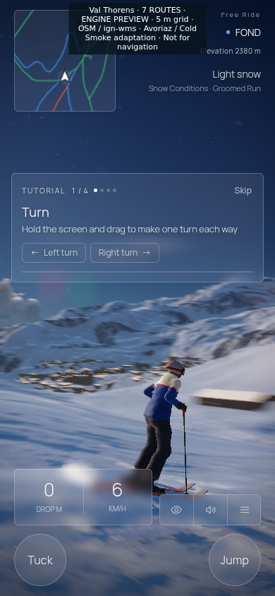

FRANCE · ALPES · ENGINE V2.0.2 PREVIEW
FR Ski Simulator
从真实雪场出发。选择你的雪山，进入基于 IGN 高程数据与 OpenStreetMap 地理数据的浏览器滑雪游戏。已接入 4 个工程预览雪场。



游戏为独立 HTML，可下载后离线打开。新版引擎基于作者最新授权版本，已通过桌面和手机横竖屏模拟测试。所有路线仍需完整滑行验证；不是现实滑雪导航工具。